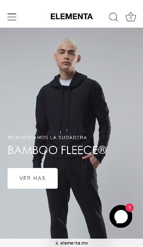

Hick's Law
H-E-B
The design of different categories help us to appreciate the Hick's Law. This agroupation helps the user to make a choice.
It's like being at the supermarket, products are organized along the aisles. But they follow a planned order, putting together similar products. The users or costumers can find what they are looking for and fulfill their needs.
Visual Hierarchy
Elementa
In this page the first part can see is the image. This company sells clothes and the image of the model wearing some of them.
Then we can take a look to the text and the flashy button. As I can undestand they have this new product they want us to know about. So the button take us to a page dedicate to that product.
White Space and Clean Design
Samsung
This last example show us a clean design with a lot of 'negative space' in the entire sreenshot. They didn't put a lot of information, only the most critical points.
I like this design and the use of constrast usign mostly black and white colors.